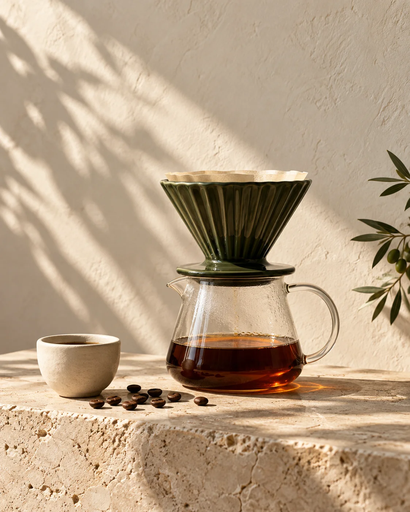

✳قهوة مختصة. بطريقتك.
كل حبة حكاية.
وكل كوب، أنت.
اكتشف المحصول الأقرب لذوقك، واضبط وصفتك، واصنع قهوتك بثقة. رحلتك مع سمراء تبدأ من هنا.
ذوقك هو البداية.
ونحن معك في كل صبّة.

01 — محاصيل سمراء
ستة محاصيل.
عوالم من النكهة.
من الكوب الزهري الخفيف إلى المذاق الغني مع الحليب. تعرّف على محاصيلنا وابحث عن بدايتك.
النكهات المذكورة اتجاهات استرشادية، وليست إضافات. اسألنا عن نكهات الدفعة الحالية، المعالجة، التحميص، الأوزان والأسعار قبل تأكيد الطلب.
02 — اكتشف ذوقك
قهوتك المفضّلة،
تنتظرك.
ثلاثة أسئلة بسيطة. اقتراح يناسب طريقتك في شرب القهوة.
03 — مختبر التحضير
كوب أفضل.
حسبة أبسط.
اختر أداتك، حدّد كمية البن، ودع الوصفة تتكيّف معك. وصفات بداية قابلة للتعديل حسب ذوقك وتحميص قهوتك.
وصفتك اليوم
04 — أكاديمية سمراء
تفاصيل صغيرة.
فرق تتذوّقه.
ابدأ بهذه الأساسيات، ثم استخدم مختبر التحضير لوصفة تتناسب مع أداتك وكمية قهوتك.
مذاق الكوب ليس كما توقّعت؟
غيّر متغيّراً واحداً في كل تجربة. الطحن أولاً، ثم النسبة والحرارة. دوّن ما يعجبك وكرّره.
تعلّم أكثر مع HARIO ↗YOUR KIND OF RITUAL.
عن سمراء
القهوة تجربة.
وليست مجرّد وصفة.
نؤمن أن متعة القهوة تبدأ بالفضول: نكهة جديدة، أداة مختلفة، أو صبّة أهدأ. جمعنا لك المحاصيل وأدوات التحضير والمعرفة في مكان واحد، لتجد ما تحب وتستمتع بصنعه كل يوم.